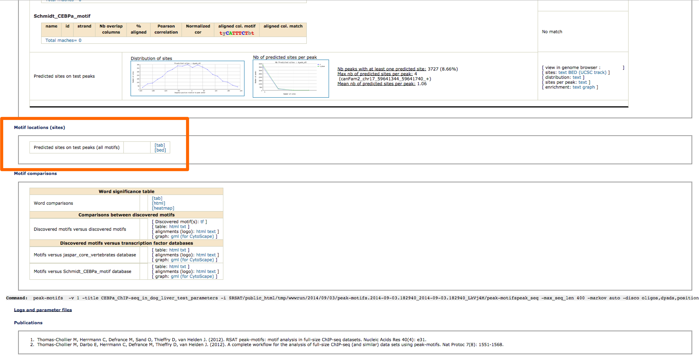
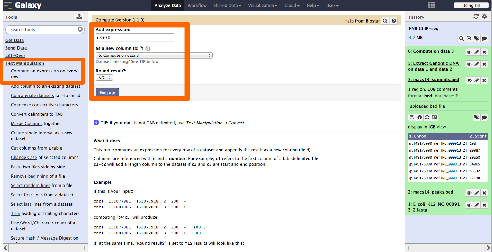
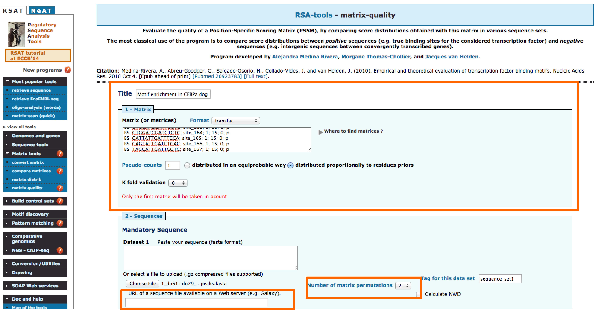

Check point: Did you recover all sequences in the bed file?
Anticipated Results
Introduction
GoalThe aim is to :
- Get familiar with motif analysis of ChIP-seq data.
- Learn de novo motif discovery methods.
- Become familiar with using RSAT via the website.
- Motif discovery with peak-motifs.
- Advanced parameter settings .
- visualisation of the putative TFBS
- Motif enrichment with matrix-quality.
Retrieving sequences from your peaks
Goal: Given a set of peaks from a ChIP-seq experiment in a bed format, retrieve the sequences corresponding to those coordinates from the genome in fasta format.
1 - Example dataset1: CEBPa binding regions in dog liver
Schmidt, Wilson and Ballester published a ChIP-seq
experiment on liver tissue to identify binding regions for
the transcription factor
CEBPa (PMID:20378774) in five different
species (human, mouse, dog, short-tailed opossum and
chicken). This data set is publicly available through
arrayexpess (E-TABM-722).
As done by the authors, CEBPa binding regions (peaks) were
called by running SWEMBL with
parameter R=0.05, on merged reads from two biological
replicates and their corresponding input controls. For this
tutorial we will analyze CEBPa binding pattern in dog, peaks
can be downloaded
from here.
2 - Fetch sequences from a bed file
- In a web browser window open the RSAT web page
- In the menu (left side) click on the NGS-ChIP-seq drop down menu, and select the tool: fetch-sequences from UCSC.
- Select the genome of interest, in this case: canFam2.
- There are several options to input a bed file: Paste the coordinates, input from a URL, and upload the file from your computer. In this case, to prevent traffic between the teaching room and internet, we will favor using the URL option. Right click on this link and "copy link location" to get the URL of the peak coordinates (BED) file. Alternatively, save the file on your computer and use the "upload" method.
- Introduce your email address to receive a mail once the job is done.
- Click on Go once the form is complete.
- When the job is finished you will receive a link to the fasta file containing the sequences corresponding to the coordinates in the bed file.

Selecting the correct genome version: Genomes are constantly updated with the improvement of sequencing technologies, alignment tools and annotations. Always verify you are selecting the correct version.
Results: At this point, you should have the URL link to the fasta file.
Discovering motifs from peak sequences
Goal:Discover binding motifs or patterns from a fasta file containing ChIP-seq determined binding regions of a transcription factor.
1 - Getting to know peak-motifs
peak-motifs is a computational pipeline that discovers motifs in peak sequences, compares them with databases, exports putative binding sites for visualization in the UCSC genome browser and generates an extensive report.
The following articles describe peak-motifs and its usage:

Passing results from one tool to the next one: As a suite of tools, RSAT is designed to pass the output from one tool as input into related tools. E.g: From the output display in fetch-sequences, you can directly send the sequences to peak-motifs.
The peak-motifs output is formed by the following parts:
- Thomas-Chollier, M., Herrmann, C., Defrance, M., Sand, O., Thieffry, D. and van Helden, J. (2011). RSAT peak-motifs: motif analysis in full-size ChIP-seq datasets Nucleic Acids Research doi:10.1093/nar/gkr1104, 9. [Paper]
- Thomas-Chollier M, Darbo E, Herrmann C, Defrance M, Thieffry D, van Helden J. (2012). A complete workflow for the analysis of full-size ChIP-seq (and similar) data sets using peak-motifs. Nat Protoc 7(8): 1551-1568. [Paper]
- Title for the analysis. For the studied dataset, use CEBPa_ChIP-seq_in_dog_liver
- A set of peak sequences in fasta format. Sequences can be pasted in the available box, input from a URL, and uploading a file from your computer. Alternatively, the sequences can come directly from another RSAT program (like fetch-sequences), as detailed just below.
- Introduce your email address to receive a mail once the job is done.
Passing results from one tool to the next one: As a suite of tools, RSAT is designed to pass the output from one tool as input into related tools. E.g: From the output display in fetch-sequences, you can directly send the sequences to peak-motifs.
The peak-motifs output is formed by the following parts:
- Sequence Composition:The distribution of sequence lengths provides a useful way to detect outlier peaks (i.e., exceptionally long peaks that may ‘dilute’ the motif signal) or irregular length distributions resulting from problems during the peak-calling procedure. Nucleotide and dinucleotide compositions are computed and displayed in the form of heat maps and positional profiles
- Motif Discovery:The workflow combines four word-based pattern-discovery algorithms that rely on two complementary criteria (overrepresentation and positional bias) to detect exceptional words (oligonucleotides) and spaced pairs of words (dyads). Significant words are used as seeds to build probabilistic description of motifs (position-specific scoring matrices), indicating residue variability at each position of the motif. Motif discovery will be done only using oligonucleotides detection by default.
- Motif comparisons: Discovered motifs are compared with one or several public databases of annotated motifs to predict associated transcription factors. Comparison results are displayed as multiple motif alignments to highlight matches with several annotated motifs (e.g., factors belonging to the same family, composite motifs bound by protein complexes). Motif comparison is perfomred against vertebrate transcription factors binding motifs in JASPAR database.
- Binding site predictions:Sequences are scanned with the discovered motifs to locate binding sites, and their positioning within peaks is analyzed (coverage, positional distribution along peaks).
Understanding peak-motifs results
- Do you have any concerns regarding peak compotition?
- Are there any significant motifs discovered?
- Where you expecting these results?
2 - Fine-tuning peak-motifs parameters
Several parameters can be tunned in peak-motifs in order to obtain better results.
- Reduce peak sequences: In our previous results it is possible to observe that most of the discovered motifs lay in the middle parts of the peaks. In order to focus our anaysis to this section of the peaks we can use this option and reduce the sequence length.
- Motif-discovery parameters: The choice of motif discovery algorithms markedly affects the result. It is recommended to combine the analysis of overrepresentation (oligo-analysis) and positional bias (position-analysis). Other available analysis are based on: spaced pairs (dyad-analysis) and locally overrepresented words (local-word).
- Motif Comparison: There are several databases that contain binding motifs available. Users can also add their own collections, in this case we will ad as well the motif reported by Schmidt,Wilson and Ballester based on a CEBPa ChIP-seq done in mouse [motif]
- Locate motifs: Locating discovered motifs in peaks can be useful to detect potitional bias, once an intersting motif is found it becomes important to locate the site in the genomic context, there are options available in peak-motifs that facilitate this task.
Results and parameters
- Try different combinations of parameters. How would you improve these results?
- How different is the discovered dog CEBPa motif in comparison to the mouse reported motif?
Visualizing the sites in the context of genome annotations
Goal: Visualize the predicted binding sites with the discovered motifs in genomic context.
1 - UCSC browser
Visualization of ChIP-seq data in the genome context can be very useful; it can be used to empirically assess quality and to identify interesting genomic regions.
USCS browser contains several annotations and data sets (mostly for human and model organisms) that can be visualized together with user specified samples.
Users can create and share personalized sessions with their data.
You can find a session we prepared containing the dog data set here
2 - Load predicted binding sites into UCSC browser
To visualize our binding sites predictions we need to:
- Dowload the bed file with the coordinates for the predicted sites from the peak-motifs output
- In UCSC browser select: My Data / Custom Tracks / add custom tracks.
- Select the bed file and click on submit
- This task can take time, don't close the window!!
- Once is loaded you will see one track per motif in the table
- Now go back to genome browser

3 - Interpretation
Sites in perspective
- Do all peaks have sites?
- Did you expect this results?
- Do you have any interesting findings?
ChIP-seq in bacteria
Goal: Apply the knowledge acquire today in a second data set.
1 - FNR ChIP-seq in E. coli K12
Myers, et al. recently published a paper where they characterized through ChIP-seq the binding profile for the transcription factor FNR (Paper) in Escherichia coli K12MG1655 .
Data was processed in the following way:
- Raw reads were downloaded from GEO database. ID:GSE41195.
- Reads were aligned to E.coli K12 MG1655 genome, version NC_000913.2 using bowtie.
- Peaks were called using MACS with parameters: --gsize 4639675 --name "macs14" --bw 400 --keep-dup 1 --bdg --single-profile --diag.
- The peak set is here.
2 - Get the genome sequence
We will require to have the fasta file for the NC_000913.2 version of the E.coli K12 MG1655 genome for the following step.
- We will download this file from NCBI.
- In the "Send to" menu, select file and then specify fasta format.
3 - Fetching peak sequences with Galaxy
Galaxy provides access through the web to useful tools for NGS analysis. We will use the tool Extract Genomic DNA to get the peak regions from the fasta file of the E. coli K12 MG1655 genome. This tool is specially useful for genomes that are not supported by resources like UCSC genome browser.
- Go to Galaxy:https://usegalaxy.org/, and login. In case you don't have a user please create one, is fast and it might be useful in the future.
- Now we will upload the genome (fasta format) and peaks (bed format) files into Galaxy through the tool Upload File under the "Get Data" menu. Select the corresponding type of data and select "unspecified" genome (the E. coli K12 genome availablable in Galaxy does not correspond to the verision we are using).
- The tool "Extract Genomic DNA" can be found under the Fetch Sequences dropdown menu.
- Select the bed and fasta files saved in the history as inputs and execute the job.
- Once the job is finished the result will appear in the history.
Fetching sequences for new genomes
- Do you know other options to fetch peak sequences for genomes that are new or not supported?
You can also do this using the command line.
$ bedtools getfasta -fi Escherichia_coli_K_12_MG1655.fasta -bed macs14_peaks.bed -fo macs14_peaks.fa
4 - Motif Discovery
Now that we have the peak sequences we can do motif discovery.
You now know what to do!
- Go to the RSAT web page.
- Fill the form and input the peak sequences in fasta format.
- Select the desired options.
- Go!
Tunning parameters
- Which parameters did you use?
- Did you select any specific set of motifs to compare with? Why?
- Which algorithm gave you the expected motif?
5 - Focusing motif discovery on the summits
The last analysis didn't show the expected results. Probably because the peaks were to long and this can difficult the search. We will now center the search around +/- 50 base pairs of the reported summits.
- Go back to the galaxy server.
- Upload the summits
- We will use the tool Compute under the Text Manipulation menu. We will use this tool twice, one to calculate the start-50 bps and end +50 bps.
- With the tool Cut under the Text Manipulation menu we will select the first,sixth and seventh columns to create a new bed file.
- As done before, use the bed file to obtain the sequences from the genome data file.

Signal in the summit
- Now the results show the expected FNR motif.
Measure the enrichment of your peak for expected motifs
Goal: To identify weather there is enrichment for a set of specific motifs in a collection of peaks.
1 - Motif enrichment in RSAT
matrix-quality is a tool that highlights the enrichment of binding sites in sequence sets obtained from high-throughput ChIP-chip, and ChIP–seq and experiments, to assess enrichment it combines information from theoretical and empirical score distributions.
The tool can be found under the Matrix Tools menu in the RSAT web. The following paper describes in detail the algorithm behind this tool.
- Medina-Rivera, A., Abreu-Goodger, C., Thomas-Chollier, M., Salgado, H., Collado-Vides, J., & Van Helden, J. (2011). Theoretical and empirical quality assessment of transcription factor-binding motifs. Nucleic Acids Research, 39(3), 808–824. [Paper]
2 - Enrichment of liver Transcription factors binding sites in ChIP-seq peak sequences
In a recent paper, Ballester, et al. in press, characterized the binding profile for other three relevant transcription factors in liver: OCT1 (HNF6), FOXA1 and HNF4A. The matrices reported in this paper for mouse can be found here.
We will use matrix-qualt to assess enrichment for the four TFs (CEBPa, OCT1, HNF4A and FOXA1).
- Define a title for the job. We will use the title:CEBPa motif enrichment in ChIP-seq
- Paste the motifs to be used and select transfac format.
- Input the peak sequences using the URL.
- Permutations are used as negative control, select 2.
- Enter your email.
- Go!

3 - Understanding enrichment graphs
First we will analyse the enrichment for CEBPa reported motif in the collection of peaks from the ChIP-seq in dog liver.
- Decreasing cumulative distribution function (dCDF).
- Decreasing cumulative distribution function (dCDF) in logy scale. The logarithm scale facilitates observing differences in high scores.
- Receiver Operating Characteristic (ROC) curves.
Is the CEBPa motif enriched?
Anticipated Results: In comparison with the theoretical score distribution with the empirical one using the CEBPA motif shows enrichment for high score values. High scores are more likely to be related to biologically relevant sites.
matrix-quality result.
Background model
Goal: Understand the relevance of background model selection and how to create one.
1 - Creating a background model
The tool creat-background-model can be used to create a costumized background model from the a set of sequences.
- Input the peak sequences in fasta format.
- Select the markov order to be used.
- Specify an email.